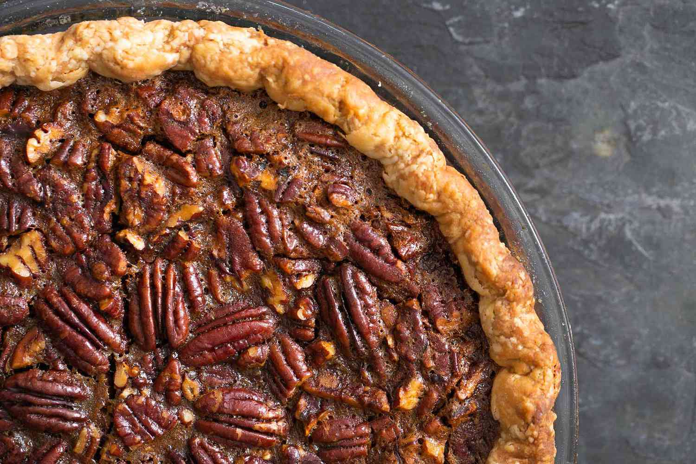
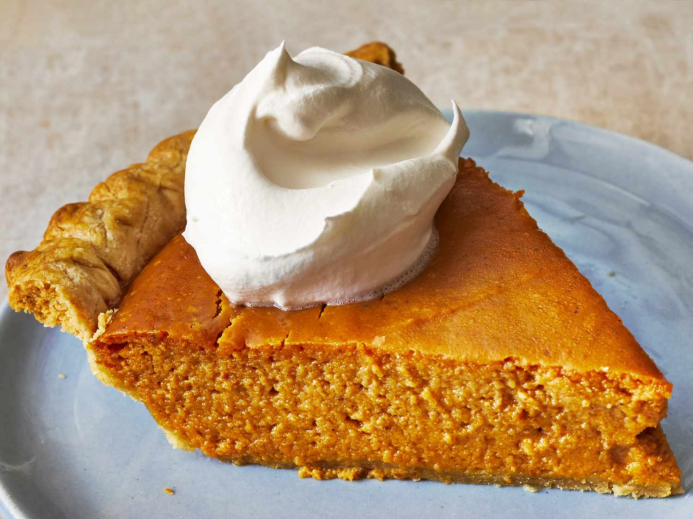

That Homemade Feel
Do you miss your mom's home scratch made pies? Do you long for that nostalgic home cooked feel? Well wallow no more! Manning PIES are made from scratch ingredients and made fresh everyday. Our recipe was handed down by gernerations within the Manning family. It's our promise that our pies will fill that hole of longing for moms homemade deserts.

Our Promise To You!
- Fresh ingredients!
- Made fresh everyday!
- Got that motherly touch!
